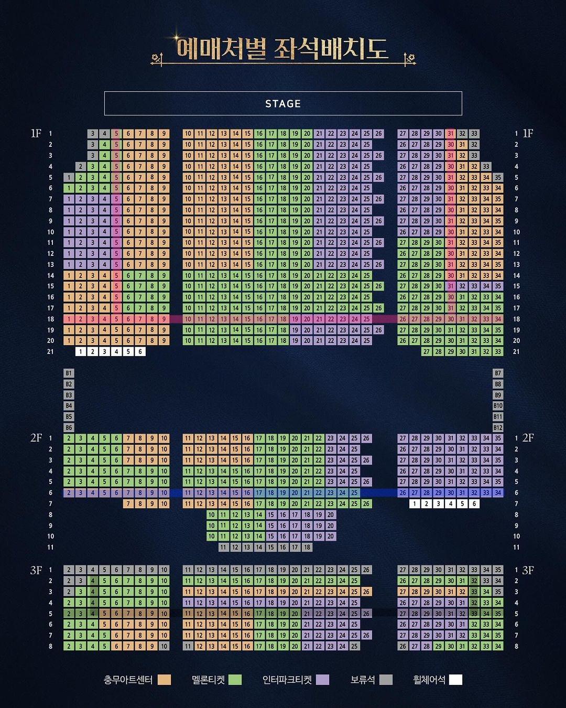

총 관람 횟수
0회
가장 많이 본 작품
-
-
주요 공연 일정 (예시)
진행중
베르사유의 장미
배역: 앙드레 그랑디에
충무아트센터 대극장
2024.07.16 ~ 2024.10.13
종료
프랑켄슈타인
배역: 빅터 프랑켄슈타인
블루스퀘어 신한카드홀
2024.06.05 ~ 2024.08.25
종료
그레이트 코멧
배역: 아나톨
유니버설아트센터
2021.03.20 ~ 2021.05.30
인터랙티브 좌석 기록
지도 위를 클릭하여 내 자리에 핀을 꽂고 기록해보세요.

※ 이미지를 클릭하면 해당 위치에 관극 기록을 추가할 수 있습니다.